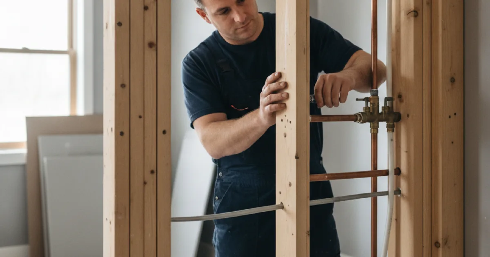

Bathroom Plumbing & Remodeling in Westchester County, NY
The plumbing decisions in a bathroom project get made early and buried behind tile. We’ll make sure the ones you can’t change later are the right ones.
- Licensed & Insured
- Upfront Pricing
- Clean, Respectful Technicians
- 15+ Years of Experience

Planning a bathroom project?
Talk to us before the walls close up, not after.
The decisions that get buried behind tile
A bathroom remodel has a point of no return, and it arrives earlier than people expect. Once the walls are closed and tiled, changing anything behind them means undoing finished work.
These are the ones worth getting right the first time:
- Where the fixtures actually go. Moving a toilet a few feet means moving a drain, which means opening the floor and re-cutting the slope. Moving a sink is far simpler. The two sound similar on a plan and aren’t.
- The shower valve. Its type and depth are set before tiling and are miserable to change afterwards. Getting the right valve in at the right depth is a five-minute decision that saves a very bad day later.
- Whether the existing pipe is worth reusing. Open walls are the cheapest look you will ever get at your plumbing. If supply lines are original and near the end of their life, this is the moment to replace them — not in three years through a finished ceiling.
- Venting. Relocated fixtures often need venting adjusted to drain properly. Skipped, you get gurgling and slow drains in a brand-new bathroom.
- Access for later. A small access panel put in now can save cutting a wall open in the future.
None of this is exotic. It just needs deciding before the tile goes on, by someone who’s thinking about the next fifteen years rather than only this week’s schedule. If you’re still choosing a contractor for the wider job, NARI’s advice on selecting a remodeling professional is a sensible checklist to hold everyone to, us included.
The bathroom work we handle
We do the plumbing side of bathrooms — from a single fixture swap through to the full rough-in for a renovation.
For a full project, that’s rough-in plumbing for a bathroom project: relocating supply and waste lines, setting the drainage falls correctly, and getting everything ready before the walls close. On the fixtures themselves, we handle installing a new shower and putting in a new bathtub, including the drain and overflow connections that decide whether either leaks quietly for years.
Smaller jobs matter just as much: replacing a failing shower valve is the classic case where good access planning pays off, and setting a new toilet properly — correct flange height, a good seal, no rock — is the difference between a toilet that lasts and one that seeps into a subfloor.
Worth being clear about scope: we’re the plumbers, not the general contractor. Tile, carpentry, drywall, electrical, and design are other trades. We work alongside them happily, and we’d rather say that plainly than take on a whole remodel we aren’t set up to deliver. If you want the wider picture of everything else we get called out for, it’s all in one place.
Where we fit with your other trades
On a bathroom project the plumber usually comes twice, and knowing that helps you schedule everyone else around it.
- After demolition, before the walls close. This is the rough-in: supply lines, waste lines, venting, and the valve body set at the right depth. Nothing is visible when we leave, and everything important happens here.
- Inspection, if the work is permitted. Relocating fixtures or altering waste lines commonly requires it, and it happens before anything is covered.
- Then tile, drywall, paint — other trades, and typically the longest stretch.
- Back at the end for the trim-out. Fixtures, faucets, trim, toilet, and the final connections. This is when a bathroom suddenly looks finished.
The common scheduling mistake is booking the plumber only for the second visit. If the rough-in was done by someone who wasn’t thinking about the finished layout, the trim-out is where that surfaces — usually as something that doesn’t quite fit.
What affects the plumbing cost
On a bathroom project, the plumbing cost is driven by how much moves rather than the number of fixtures. Keeping things where they are means reconnection; relocating them means new supply, drain, and venting.
Moving the toilet is the single most expensive change, because its drain is the largest and needs the most fall. Knowing that while the layout is still a drawing — rather than after the tile is ordered — is where good planning saves real money.
The moment to deal with old pipe
A remodel opens the walls, which is the cheapest chance you will ever get to replace tired supply lines. Doing it now is a small addition to a job already underway; doing it later means reaching the same pipe through finished tile.
If the existing plumbing is original and near the end of its life, we will say so. If it is recent and sound, we will tell you to leave it alone rather than add work you do not need.
Common questions
Do you do full bathroom remodels?
We do the plumbing side in full. Tile, carpentry, drywall, and design are separate trades, and we’d rather work alongside your contractor than claim a scope we don’t cover.
Can I move the toilet to the other side of the room?
Usually, but it’s the most expensive fixture to move because the drain has to move with it and keep the right fall. Depending on your floor structure that can be simple or genuinely involved. Worth pricing before it’s on the plan.
Should I replace the old pipes while the walls are open?
If they’re original and showing their age, yes — this is the cheapest that job will ever be. If they were replaced recently and look sound, no. We’ll tell you which you’ve got rather than recommending it automatically.
Do I need a permit for a bathroom renovation?
If you’re relocating fixtures or altering waste and vent lines, usually yes. Swapping a fixture in the same position often not. It varies by municipality here, and we’ll confirm what applies at your address.
How long is the bathroom out of use?
Our part is typically a short visit at rough-in and another at trim-out. The stretch in between belongs to tile, drywall, and paint, so the honest answer depends on your contractor’s schedule more than ours.
Get the plumbing right the first time
Licensed, insured, and thinking about what’s behind the wall in ten years, not just this week.